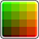

5/5
5/5 
About, contact & credits:
colorPicker 0.9 beta!
for Google Chrome™
© 2011 by Peter Dematté - all rights reserved.
The colorPicker© was built in 2010 inspired by:
johndyer.name
JSColor.com
quirksmode.org
For more information about the colorPicker 0.9 and all its features and functions, see: dematte.at/colorPicker